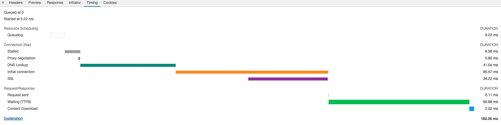
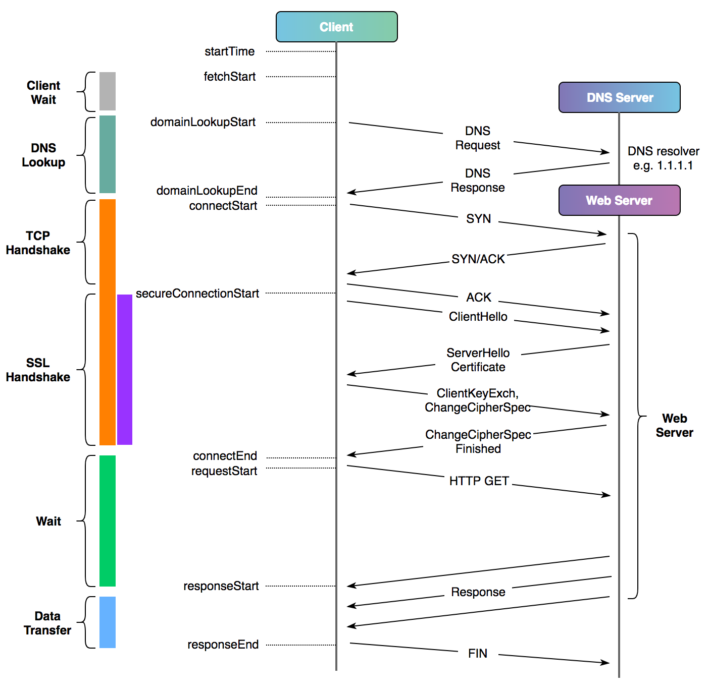

一、Curl命令详解
帮助文档：https://curl.se/docs/manpage.html
语法：curl [options] [URL...]
参数：
Options: (H) means HTTP/HTTPS only, (F) means FTP only
--anyauth 可以使用“任何”身份验证方法
-a, --append FTP/SFTP上传文件时，curl将追加到目标文件，而非覆盖
--basic 使用HTTP基本验证
--cacert FILE 指定CA证书文件(SSL)
--capath DIR 指定CA目录 (SSL)
-E, --cert CERT[:PASSWD] Client certificate file and password (SSL)
--cert-type 指定证书文件类型 (DER/PEM/ENG) (SSL)
--ciphers LIST 指定SSL密码
--compressed 响应压缩格式 (deflate/gzip)
-K, --config FILE 后接参数文件，参数文件中可以定义HTTP请求的相关的内容（URL、HEAD、DATA）
--connect-timeout SECONDS 设置最大请求时间
-C, --continue-at OFFSET 断点续转
-b, --cookie STRING/FILE 设置cookies
-c, --cookie-jar FILE 操作结束后把cookie写入到文件中
--create-dirs 建立本地目录层次结构
--crlf 上传时把LF转变成CRLF
--crlfile FILE Get a CRL list in PEM format from the given file
-d, --data DATA HTTP POST data (H)
--data-ascii DATA 以ascii的方式post数据
--data-binary DATA 以二进制的方式post数据
--data-urlencode DATA HTTP POST data url encoded (H)
--delegation STRING GSS-API delegation permission
--digest 使用HTTP数字身份验证
--disable-eprt 禁止使用EPRT或LPRT
--disable-epsv 禁止使用EPSV
-D, --dump-header FILE 把header信息写入到文件中
--egd-file FILE 为随机数据(SSL)设置EGD socket路径
--engine ENGINGE 指定加密引擎(SSL). "--engine list" for list
-f, --fail 连接失败时不显示http错误
-F, --form CONTENT form表单提交
--form-string STRING 模拟http表单提交数据
--ftp-account DATA Account data string (F)
--ftp-alternative-to-user COMMAND String to replace "USER [name]" (F)
--ftp-create-dirs 如果远程目录不存在，创建远程目录
--ftp-method [MULTICWD/NOCWD/SINGLECWD] 控制CWD的使用
--ftp-pasv 使用 PASV/EPSV 代替端口
-P, --ftp-port ADR Use PORT with given address instead of PASV (F)
--ftp-skip-pasv-ip Skip the IP address for PASV (F)
--ftp-pret Send PRET before PASV (for drftpd) (F)
--ftp-ssl-ccc Send CCC after authenticating (F)
--ftp-ssl-ccc-mode ACTIVE/PASSIVE Set CCC mode (F)
--ftp-ssl-control Require SSL/TLS for ftp login, clear for transfer (F)
-G, --get 使用get请求发送 -d参数指定的数据
-g, --globoff 禁用网址序列和范围使用{}和[]
-H, --header LINE 增加Head头
-I, --head 只显示文档信息
-h, --help 显示帮助信息
--hostpubmd5 MD5 Hex encoded MD5 string of the host public key. (SSH)
-0, --http1.0 强制使用HTTP 1.0协议
--ignore-content-length 忽略的HTTP头信息的长度
-i, --include 输出响应Head头
-k, --insecure 允许curl使用非安全的ssl连接并且传输数据（证书不受信）
--interface INTERFACE 使用指定网络接口/地址
-4, --ipv4 解析域名为ipv4地址(域名有多个ip时)
-6, --ipv6 解析域名为ipv6地址(域名有多个ip时)
-j, --junk-session-cookies 读取文件时忽略session cookie (H)
--keepalive-time SECONDS 设置连接的保活时间
--key KEY 私钥文件名(SSL/SSH)
--key-type TYPE 私钥文件类型 (DER/PEM/ENG) (SSL)
--krb LEVEL 使用指定安全级别的krb (F)
--libcurl FILE Dump libcurl equivalent code of this command line
--limit-rate RATE 指定最大的传输速率
-l, --list-only 列出ftp目录下的文件名称(F)
--local-port RANGE 强制使用本地端口号
-L, --location curl自动重定向（3xx）
--location-trusted like --location and send auth to other hosts (H)
-M, --manual 显示全手动
--mail-from FROM 指定发信人邮箱(SMTP)
--mail-rcpt TO 指定收信人邮箱(SMTP)
--mail-auth AUTH Originator address of the original email
--max-filesize BYTES 允许下载文件的最大大小
--max-redirs NUM Maximum number of redirects allowed (H)
-m, --max-time SECONDS 设置整个操作的允许消耗的最大时间，对于在延时网络下的批量操作有利
--metalink Process given URLs as metalink XML file
--negotiate 使用HTTP Negotiate身份验证(H)
-n, --netrc 从netrc文件中读取用户名和密码
--netrc-optional 使用 .netrc 或者 URL来覆盖-n
--netrc-file FILE 指定.netrc文件
-N, --no-buffer 禁用输出流缓冲区
--no-keepalive 连接不保活
--no-sessionid Disable SSL session-ID reusing (SSL)
--noproxy List of hosts which do not use proxy
--ntlm 使用 HTTP NTLM 身份验证
-o, --output FILE 将响应数据输出到指定文件，后接文件参数
--pass PASS 私钥密码 (SSL/SSH)
--post301 301重定向后不切换至GET请求 (H)
--post302 302重定向后不切换至GET请求 (H)
--post303 303重定向后不切换至GET请求 (H)
-#, --progress-bar 对发送和接收进行简单的进度条展示
--proto PROTOCOLS Enable/disable specified protocols
--proto-redir PROTOCOLS Enable/disable specified protocols on redirect
-x, --proxy [PROTOCOL://]HOST[:PORT] 设置代理
--proxy-anyauth 选择任一代理身份验证方法 (H)
--proxy-basic 在代理上使用基本身份验证 (H)
--proxy-digest 在代理上使用数字身份验证 (H)
--proxy-negotiate 在代理上使用Negotiate身份验证 (H)
--proxy-ntlm 在代理上使用ntlm身份验证 (H)
-U, --proxy-user USER[:PASSWORD] 设置代理用户名和密码
--proxy1.0 HOST[:PORT] 使用HTTP/1.0的代理
-p, --proxytunnel Operate through a HTTP proxy tunnel (using CONNECT)
--pubkey KEY 公钥文件 (SSH)
-Q, --quote CMD 文件传输前，发送命令到服务器 (F/SFTP)
--random-file FILE File for reading random data from (SSL)
-r, --range RANGE 检索来自HTTP/1.1或FTP服务器字节范围
--raw Do HTTP "raw", without any transfer decoding (H)
-e, --referer 发送"Referer Page"到服务器
-J, --remote-header-name Use the header-provided filename (H)
-O, --remote-name 把输出写到文件中，保留远程文件的文件名
--remote-name-all Use the remote file name for all URLs
-R, --remote-time 在本地生成文件时，保留远程文件时间
-X, --request COMMAND 指定HTTP请求方法
--resolve HOST:PORT:ADDRESS 强制解析HOST:PORT到某个ADDRESS
--retry NUM 传输出现问题时，重试的次数
--retry-delay SECONDS 传输出现问题时，设置重试间隔时间
--retry-max-time SECONDS 传输出现问题时，设置最大重试时间
-S, --show-error 显示错误信息
-s, --silent 静默模式。不输出任何东西
--socks4 HOST[:PORT] 用socks4代理给定主机和端口
--socks4a HOST[:PORT] 用socks4a代理给定主机和端口
--socks5 HOST[:PORT] 用socks5代理给定主机和端口
--socks5-basic socks5代理开启username/password认证
--socks5-gssapi socks5代理开启GSS-API认证
--socks5-hostname HOST[:PORT] SOCKS5 proxy, pass host name to proxy
--socks5-gssapi-service NAME SOCKS5 proxy service name for gssapi
--socks5-gssapi-nec Compatibility with NEC SOCKS5 server
-Y, --speed-limit RATE 如果在speed-time期间，下载比speed-limit这个更慢，则下载废止
-y, --speed-time SECONDS 如果在speed-time期间，下载比speed-limit这个更慢，则下载废止。默认30s
--ssl Try SSL/TLS (FTP, IMAP, POP3, SMTP)
--ssl-reqd Require SSL/TLS (FTP, IMAP, POP3, SMTP)
-2, --sslv2 使用SSLv2的（SSL）
-3, --sslv3 使用SSLv3的（SSL）
--ssl-allow-beast Allow security flaw to improve interop (SSL)
--stderr FILE 指定错误信息输出文件
--tcp-nodelay 使用TCP_NODELAY选项
-t, --telnet-option OPT=VAL Telnet选项设置
--tftp-blksize VALUE 设置TFTP BLKSIZE(必须大于512)
-z, --time-cond TIME 传送时间设置
-1, --tlsv1 强制使用TLS version 1.x
--tlsv1.0 使用TLSv1.0 (SSL)
--tlsv1.1 使用TLSv1.1 (SSL)
--tlsv1.2 使用TLSv1.2 (SSL)
--trace FILE dump出输入输出数据至文件
--trace-ascii FILE 跟'--trace'一样，但是没有hex输出
--trace-time 跟踪/详细输出时，添加时间戳
--tr-encoding Request compressed transfer encoding (H)
-T, --upload-file FILE 上传文件
--url URL URL to work with
-B, --use-ascii 使用ASCII文本传输
-u, --user USER[:PASSWORD] 设置服务端用户和密码
--tlsuser USER TLS用户名
--tlspassword STRING TLS密码
--tlsauthtype STRING TLS认证类型(default SRP)
--unix-socket FILE Connect through this UNIX domain socket
-A, --user-agent STRING 发送用户代理给服务器 (H)
-v, --verbose 获取更多输入输出相关的内容，对于debug非常有用
-V, --version 显示当前的curl版本
-w, --write-out FORMAT 指定完成请求以后输出什么信息
--xattr Store metadata in extended file attributes
-q If used as the first parameter disables .curlrc
二、实例详解
1、通过-o/-O选项保存下载的文件到指定的文件中
-o：将文件保存为命令行中指定的文件名的文件中
-O：使用URL中默认的文件名保存文件到本地
# 将文件下载到本地并命名为mygettext.html
curl -o mygettext.html http://www.gnu.org/software/gettext/manual/gettext.html
# 将文件保存到本地并命名为gettext.html
curl -O http://www.gnu.org/software/gettext/manual/gettext.html
2、显示response中的Headers或Body
-i：显示response header 和 body
-I：只显示response header
curl -i https://www.baidu.com
curl -I https://www.baidu.com
3、同时获取多个文件
curl -O URL1 -O URL2
4、代理的设置
-x：为CURL设置代理
curl -x 192.168.1.2:3128 http://google.com/
如果curl命令请求不想走系统代理
curl --noproxy http://www.baidu.com
5、允许重定向
-L：允许重定向
curl -L -x 192.168.1.2:3128 http://google.com/
6、限速
--limit-rate： 对CURL的最大网络使用进行限制
curl --limit-rate 1000B -O http://www.gnu.org/software/gettext/manual/gettext.html
7、添加认证信息
-u: 在访问需要认证的页面时，可通过-u选项提供用户名和密码进行授权
curl -u username:password URL
# 通常的做法是在命令行只输入用户名，之后会提示输入密码，这样可以保证在查看历史记录时不会将密码泄露
curl -u username URL
8、获取更多信息
-v 和 -trace：获取更多信息
curl -v -L -x 192.168.1.2:3128 http://google.com/
9、自定义HTTP请求: POST/PUT/DELETE
-X: 可以指定curl发送HTTP请求的方法，例如GET(默认),PUT,POST,DELETE等
-H：添加请求的Header信息
-d/--data: 添加请求的Body
curl -XPUT "http://127.0.0.1:9200/test/test/1" \
-H 'Content-Type: application/json' \
-d '
{
"id": "191",
"prd_id": "4",
"mer_id": "1000005",
"data_status": "0",
"datachange_createtime": "1543915326",
"datachange_lasttime": "1543915368"
}'
nc -l 8080 &
curl -X POST http://localhost:8080 \
-H "Content-Type: application/json" \
-H "Connection: close" \
--data-binary @测试数据.json
nc -l 8080 &
curl "http://localhost:8080" \
-H "Accept: application/json" \
-H "Content-Type: application/json" \
--data @- <<EOF
{
"me": "$USER",
"something": $(date +%s)
}
EOF
10、断点续传
-C: 可对大文件使用断点续传功能
curl -C -O http://www.gnu.org/software/gettext/manual/gettext.html
11、模仿浏览器
-A：指定浏览器去访问网站(有些网站需要使用特定的浏览器去访问他们，有些还需要使用某些特定的版本)
curl -A "Mozilla/4.0 (compatible; MSIE 8.0; Windows NT 5.0)" http://google.com/
12、显示下载进度条
-# ：显示下载进度条
curl -# -O http://www.linux.com/dodo1.JPG
13、伪造referer（盗链）
很多服务器会检查http访问的referer从而来控制访问。比如：你是先访问首页，然后再访问首页中的邮箱页面，这里访问邮箱的referer地址就是访问首页成功后的页面地址，如果服务器发现对邮箱页面访问的referer地址不是首页的地址，就断定那是个盗连了
-e: 设定referer
curl -e "www.linux.com" http://mail.linux.com
# 这样就会让服务器其以为你是从www.linux.com点击某个链接过来的
14、保存与使用Cookie
-D: 保存Cookie
-b: 使用Cookie
# 将网站的cookies信息保存到sugarcookies文件中
curl -D sugarcookies http://localhost/sugarcrm/index.php
# 使用上次保存的cookie信息
curl -b sugarcookies http://localhost/sugarcrm/index.php
15、忽略证书不受信问题
-k: 忽略HTTPS证书不受信问题
curl -k https://allinone.okd311.curiouser.com:8443
16、引用环境变量
Shell脚本中使用Curl命令，经常要通过变量替换变量中的值。使用'"$var"'进行应用
curl 'https://oapi.dingtalk.com/robot/send?access_token=******' \
-H 'Content-Type: application/json' \
-d '{"msgtype": "text",
"text": {"content": "消息是: '"$message"'"}
}'
17、强制域名解析至指定IP地址
curl --resolve test.test.com:80:127.0.0.1 "http://test.test.com/"
18、显示请求的耗时情况
curl 命令提供了 -w 参数，能够帮助分析请求的哪一步耗时比较长，好进一步找到问题的原因。

-w后面指定要显示的内容，后面可通过curl的变量显示某一项耗时。以下为内置
time_namelookup：DNS 域名解析耗时time_connect：TCP 连接建立的时间，就是三次握手的时间time_appconnect：SSL/SSH 等上层协议建立连接的时间，比如 connect/handshake 的时间time_redirect：从开始到最后一个请求事务的时间time_pretransfer：从请求开始到响应开始传输的时间time_starttransfer：从请求开始到第一个字节将要传输的时间，这包括time_pretransfer以及服务器计算结果所需的时间。time_total：这次请求花费的全部时间url_effective: 最终获取的url地址，尤其是当你指定给curl的地址存在301跳转，且通过-L继续追踪的情形。time_redirect: 重定向时间，包括到最后一次传输前的几次重定向的DNS解析，连接，预传输，传输时间num_redirects: 在请求中跳转的次数ssl_verify_result: ssl认证结果，返回0表示认证成功。size_request: 请求的大小
$ curl -kls \
-w "\n请求响应状态码 : %{http_code}\n----------\n请求信息：\n 客户端信息: %{local_ip}:%{local_port} \n 服务器信息: %{remote_ip}:%{remote_port}\n 发送请求个数: %{num_connects}\n 请求大小: %{size_request} bytes\n 重定向URL: %{redirect_url}\n 响应Header大小: %{size_header} bytes\n请求耗时统计:\n DNS解析完成时间: 第%{time_namelookup}秒\n TCP握手完成时间: 第%{time_connect}秒\n SSL握手完成时间: 第%{time_appconnect}秒\n 客户端发送请求开始时间: 第%{time_pretransfer}秒\n 请求收到第一个字节时间: 第%{time_starttransfer}秒\n 请求结束时间: 第%{time_total}秒\n----------\nTCP和SSL连接耗时: %{time_pretransfer} - %{time_namelookup}\n服务器处理耗时: %{time_starttransfer} - %{time_pretransfer}\n响应数据传输耗时: %{time_total} - %{time_starttransfer}\n共计耗时: %{time_total}秒\n" \
https://google.com
<HTML><HEAD><meta http-equiv="content-type" content="text/html;charset=utf-8">
<TITLE>301 Moved</TITLE></HEAD><BODY>
<H1>301 Moved</H1>
The document has moved
<A HREF="https://www.google.com/">here</A>.
</BODY></HTML>
请求响应状态码 : 301
----------
请求信息：
客户端信息: 127.0.0.1:64073
服务器信息: 127.0.0.1:8001
发送请求个数: 1
请求大小: 184 bytes
重定向URL: https://www.google.com/
响应Header大小: 508 bytes
请求耗时统计:
DNS解析完成时间: 第0.000114秒
TCP握手完成时间: 第0.000358秒
SSL握手完成时间: 第0.460882秒
客户端发送请求开始时间: 第0.460956秒
请求收到第一个字节时间: 第0.603045秒
请求结束时间: 第0.603188秒
----------
TCP和SSL连接耗时: 0.460956 - 0.000114
服务器处理耗时: 0.603045 - 0.460956
响应数据传输耗时: 0.603188 - 0.603045
共计耗时: 0.603188秒
可将-w的输出格式配置写在curl的默认配置文件~/.curlrc中
-kls
-w "\n请求响应状态码 : %{http_code}\n----------\n请求信息：\n 客户端信息: %{local_ip}:%{local_port} \n 服务器信息: %{remote_ip}:%{remote_port}\n 发送请求个数: %{num_connects}\n 请求大小: %{size_request} bytes\n 重定向URL: %{redirect_url}\n 响应Header大小: %{size_header} bytes\n请求耗时统计:\n DNS解析完成时间: 第%{time_namelookup}秒\n TCP握手完成时间: 第%{time_connect}秒\n SSL握手完成时间: 第%{time_appconnect}秒\n 客户端发送请求开始时间: 第%{time_pretransfer}秒\n 请求收到第一个字节时间: 第%{time_starttransfer}秒\n 请求结束时间: 第%{time_total}秒\n----------\nTCP和SSL连接耗时: %{time_pretransfer} - %{time_namelookup}\n服务器处理耗时: %{time_starttransfer} - %{time_pretransfer}\n响应数据传输耗时: %{time_total} - %{time_starttransfer}\n共计耗时: %{time_total}秒\n"
Chrome控制台时间显示的耗时对应


参考：
- https://curl.se/docs/manpage.html
- https://blog.cloudflare.com/a-question-of-timing/
- https://cizixs.com/2017/04/11/use-curl-to-analyze-request/
- https://blog.csdn.net/weifangan/article/details/80741981
19、新版本Curl不支持旧的TLS版本
创建~/.openssl_allow_tls1.0.cnf
openssl_conf = openssl_init
[openssl_init]
ssl_conf = ssl_sect
[ssl_sect]
system_default = system_default_sect
[system_default_sect]
CipherString = DEFAULT@SECLEVEL=1
生效
OPENSSL_CONF=~/.openssl_allow_tls1.0.cnf curl -v https://*****
# 或者
export OPENSSL_CONF=~/.openssl_allow_tls1.0.cnf
curl -v https://*****
unset OPENSSL_CONF
或者直接设置全局的OpenSSL配置文件 /etc/ssl/openssl.cnf
openssl_conf = openssl_init
[openssl_init]
ssl_conf = ssl_sect
[ssl_sect]
system_default = system_default_sect
[system_default_sect]
CipherString = DEFAULT@SECLEVEL=1
参考： https://askubuntu.com/questions/1250787/when-i-try-to-curl-a-website-i-get-ssl-error
20、使用SSL证书文件
# 使用client.pem+key.pem
curl -k --cert client.pem --key key.pem https://www.xxxx.com
# 使用all.pem
curl -k --cert all.pem https://www.xxxx.com
21、不显示进度但显示报错
curl -sS https://google.com
22、上传文件
curl --form upload=@localfilename --form press=OK https://google.com
23、显示trace等详细信息
curl --trace-ascii /dev/stdout https://google.com
curl --trace-ascii - https://google.com